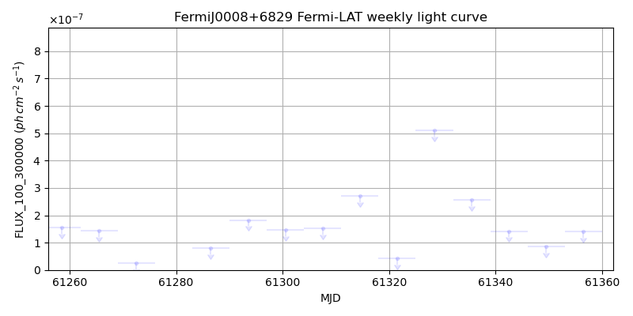
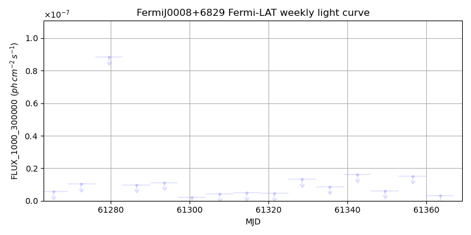

LAT Lightcurve site: https://fermi.gsfc.nasa.gov/ssc/data/access/lat/msl_lc/source/Fermi_J0008p6829
NED: Query
Time of last update of this page: UT: 2026-11-28 16:10 (MJD: 61372.674)
| Property | Value |
|---|---|
| R.A. | 0:08:20.64 |
| Dec. | 68:34:44.4 |
| z | 0.000 |
| 3FGL SpectrumType | |
| 3FGL PL Index | -1.00 |
| 3FGL Flux_100_300000 | -1.00e+00 |
| 3FGL Flux_1000_300000 | -1.00e+00 |
| 3FGL Flux >200 GeV | -1.00e+00 |
| 3FGL Extrap. Crab >200 GeV | -1.00 |
| 3FGL Flux After EBL Absorption >200GeV | -1.00e+00 |
| 3FGL EBL Crab Fraction >200GeV | -1.00 |
| MJD | dMJD | Flux | dFlux | Frac3FGL | FracCrab>200GeV | EBLFracCrab>200GeV |
|---|---|---|---|---|---|---|
| 61367.50 | 0.50 | 3.05e-07 | 0.00e+00 | 0.00 | 0.00 | -0.00 |
| 61368.50 | 0.50 | 7.48e-08 | 0.00e+00 | 0.00 | 0.00 | -0.00 |
| 61369.50 | 0.50 | 3.68e-08 | 0.00e+00 | 0.00 | 0.00 | -0.00 |
| 61370.50 | 0.50 | 1.38e-07 | 0.00e+00 | 0.00 | 0.00 | -0.00 |
| 61371.50 | 0.50 | 5.88e-07 | 0.00e+00 | 0.00 | 0.00 | -0.00 |

| MJD | dMJD | Flux | dFlux | Frac3FGL | FracCrab>200GeV | EBLFracCrab>200GeV |
|---|---|---|---|---|---|---|
| 61335.50 | 3.50 | 2.55e-07 | 0.00e+00 | 0.00 | 0.00 | -0.00 |
| 61342.50 | 3.50 | 1.41e-07 | 0.00e+00 | 0.00 | 0.00 | -0.00 |
| 61349.50 | 3.50 | 8.55e-08 | 0.00e+00 | 0.00 | 0.00 | -0.00 |
| 61356.50 | 3.50 | 1.39e-07 | 0.00e+00 | 0.00 | 0.00 | -0.00 |
| 61363.50 | 3.50 | 1.43e-07 | 0.00e+00 | 0.00 | 0.00 | -0.00 |

| MJD | dMJD | Flux | dFlux | Frac3FGL | FracCrab>200GeV | EBLFracCrab>200GeV |
|---|---|---|---|---|---|---|
| 61367.50 | 0.50 | 4.08e-08 | 0.00e+00 | 0.00 | 0.00 | -0.00 |
| 61368.50 | 0.50 | 2.75e-08 | 0.00e+00 | 0.00 | 0.00 | -0.00 |
| 61369.50 | 0.50 | 1.20e-08 | 0.00e+00 | 0.00 | 0.00 | -0.00 |
| 61370.50 | 0.50 | 1.24e-08 | 0.00e+00 | 0.00 | 0.00 | -0.00 |
| 61371.50 | 0.50 | 1.98e-08 | 0.00e+00 | 0.00 | 0.00 | -0.00 |

| MJD | dMJD | Flux | dFlux | Frac3FGL | FracCrab>200GeV | EBLFracCrab>200GeV |
|---|---|---|---|---|---|---|
| 61335.50 | 3.50 | 8.67e-09 | 0.00e+00 | 0.00 | 0.00 | -0.00 |
| 61342.50 | 3.50 | 1.61e-08 | 0.00e+00 | 0.00 | 0.00 | -0.00 |
| 61349.50 | 3.50 | 6.21e-09 | 0.00e+00 | 0.00 | 0.00 | -0.00 |
| 61356.50 | 3.50 | 1.52e-08 | 0.00e+00 | 0.00 | 0.00 | -0.00 |
| 61363.50 | 3.50 | 3.04e-09 | 0.00e+00 | 0.00 | 0.00 | -0.00 |
--------------------------------------------------------- Using user-supplied coords: 0:08:20.64 68:34:44.4 2000 --------------------------------------------------------- FLWO UT night of: 2026-11-29 Local Sid. @ Midnight: 04:08 Sunset (-15.0) (local, UT): 18:31 01:31 Sunrise (-15.0) (local, UT): 05:53 12:53 Moonrise (local, UT): 21:57 04:57 Moonset (local, UT): Moon phase: 0.72 --------------------------------------------------------- AzTime LSID UT Obj_el Obj_az Mn_el Mn_az Sep. --------------------------------------------------------- 18:31 22:39 01:31 50.8 12.7 -32.9 32.1 85.4 19:01 23:09 02:01 52.0 8.8 -29.4 38.9 85.5 19:31 23:39 02:31 52.7 4.5 -25.4 45.0 85.7 20:01 00:09 03:01 53.0 0.0 -21.0 50.6 85.9 20:31 00:39 03:31 52.7 355.5 -16.2 55.6 86.1 21:01 01:09 04:01 52.0 351.2 -11.1 60.2 86.2 21:31 01:39 04:31 50.8 347.3 -5.4 64.5 86.4 22:01 02:09 05:01 49.2 343.9 0.4 68.5 86.5 22:31 02:39 05:31 47.2 341.0 5.8 72.2 86.7 23:01 03:10 06:01 45.0 338.7 11.6 75.8 86.8 23:31 03:40 06:31 42.6 337.0 17.5 79.4 87.0 00:01 04:10 07:01 40.0 335.8 23.6 82.9 87.1 00:31 04:40 07:31 37.4 335.0 29.7 86.5 87.3 01:01 05:10 08:01 34.7 334.8 35.8 90.3 87.4 01:31 05:40 08:31 31.9 334.9 42.0 94.4 87.5 02:01 06:10 09:01 29.3 335.4 48.1 99.1 87.7 02:31 06:40 09:31 26.6 336.3 54.2 104.7 87.8 03:01 07:10 10:01 24.1 337.5 60.1 111.7 87.9 03:31 07:40 10:31 21.8 338.9 65.6 121.1 88.1 04:01 08:10 11:01 19.5 340.6 70.5 134.7 88.2 04:31 08:40 11:31 17.5 342.5 74.0 154.7 88.4 05:01 09:11 12:01 15.7 344.6 75.2 181.1 88.5 05:31 09:41 12:31 14.1 346.9 73.6 206.8 88.7 05:53 10:02 12:53 13.2 348.7 71.0 221.2 88.8 --------------------------------------------------------- Source never above horizon of 55.0 deg. Dark hours >55 deg.: 0.00